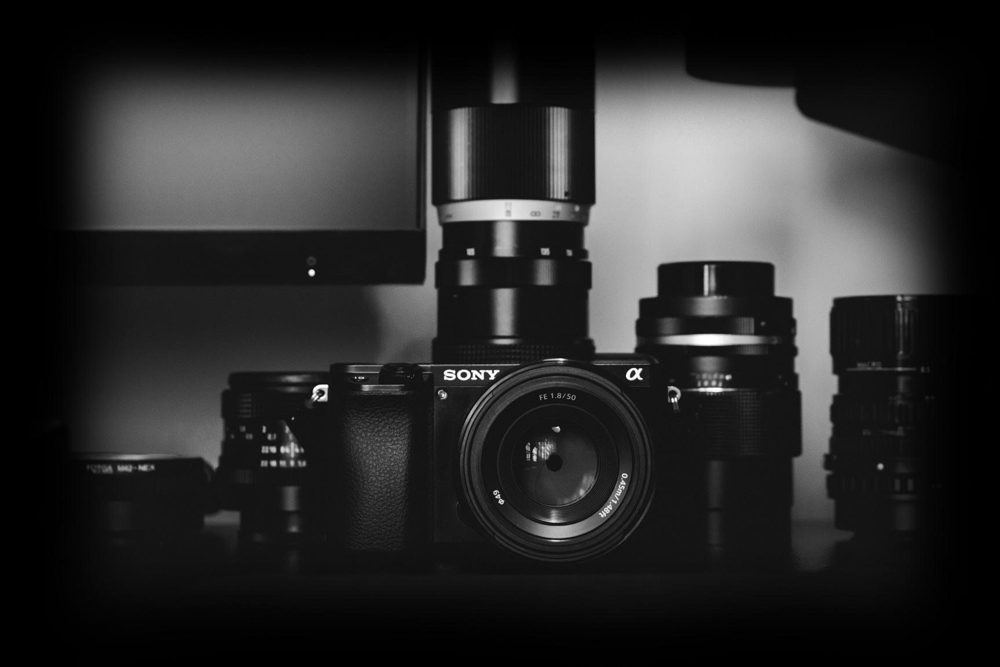

Повечето хора обвързват идеята за професионална фотография с образа на огледално-рефлексните (DSLR) камери. Въпреки своите неуспорими предимства (качество, скорост, прецизност, гъвкавост, контрол) те имат и доста недостатъци. DSLR камерите са големи, тежки, сложни за управление и най-вече скъпи. Tова са и едни от основните причини през последните години безогледалните камери да добиват все повече популярност.
Липсата на огледален механизъм прави безогледалните камери по-леки и компактни и дава възможност на фотографа да следи в реално време как настройките, които е избрал ще се отразят на изображението. Pървенец в производството на удобните безогледални камери пез последните години са Sony с камерите от серията α. Въпреки, че неуспоримите първенци са α7III и α9III, бюджетните камери в серията – α6100 и 6600 не им отстъпват по възможности.
Предимства на α6100
Най-голямото предимство на α6100 безспорно е съотношението цена/качество. Моделът е по-евтин с над 1500 лв от следващия в серията α6600, като може да бъде намеренн нов на цена от 1449лв. Разлика между двата може да бъде открита в качеството на видеото и устойчивост на тялото срещу прах и вода, качеството на снимките обаче е едно и също.
Технологиите използвани от Sony в α6100 са втората причина да се спрете на тази камера. Моделът дебютира на пазара през Септември 2019 и носи най-новата и бърза технология за авто-фокус върху око. Както човешко, така и животинско! Нещо повече – този апарат поддържа изключителният 425-точков хибриден автофокус. За сравнение, DSLR камера в същия ценови диапазон – Nikon D610 разполага с 39 точков автофокус. α6100 има накланящ се TFT дисплей, поддържа бавно заснемане на 120 fps и също удобните опции за NFC прехвърляне на файлове и Remote control, които правят камерата чудесена за фотографи на път. С нея ще може да сте едновременно обект на и фотограф, а снимката може да бъде публикувана в социалните мрежи в рамките на минути.
Третото предимство на α6100 са размерите му. Докато теглото на DSLR камерите варира над 800 гр с батерия, бюджетният безогледален фотоапарат от сони тежи едва 396 гр.
Друг плюс, особено за любителите на ретро стила, е яъзможността за използване на стари обективи. α6100 има стандартната за Sony E-mount резба за обектив. Преходниците от Е-mount към класическата М42 резба са на изключително достъпни цени, което позволява на собствениците на този апарат да използват ретро обективи на Zeiss, Accura, Sigma и други производители.
Повече за всички невероятни функции на апарата може да прочетете на официалния уебсайт на Sony https://www.sony.com/electronics/interchangeable-lens-cameras/ilce-6100
Недостатъци на Sony α6100
Един от най-забележимите недостатъци на Sony α6100 e размерът на сензора му. За разлика от по-скъпите α7 и α 9, които имат FX сензори, 1.6 пъти по-големи от АPS-C сезора на α6100:
 Този недостатък се преодолява лесно чрез избор на подходящ обектив с по-малка фокална дължина. Например 35mm вместо 55mm за портрети.
Вторият недостатък е издражливостта на тялото на α6100. Апаратът е напълно незащитен от проникване на прах и вода. Ако планирате да снимате в по-екстремни условия, би било добра идея да се замислите за избор на α6600. Във всички останали ситуации α6100 ще ви свърши чудесна работа!
Последният недостатък е живота на батерията. Sony α6100 идва с батерия Sony NP-FW50 (1020mAh), която ще ви стигне за средно 1500 кадъра. Решението на този проблем е лесно и просто – оборудвайте се с втора.
Този недостатък се преодолява лесно чрез избор на подходящ обектив с по-малка фокална дължина. Например 35mm вместо 55mm за портрети.
Вторият недостатък е издражливостта на тялото на α6100. Апаратът е напълно незащитен от проникване на прах и вода. Ако планирате да снимате в по-екстремни условия, би било добра идея да се замислите за избор на α6600. Във всички останали ситуации α6100 ще ви свърши чудесна работа!
Последният недостатък е живота на батерията. Sony α6100 идва с батерия Sony NP-FW50 (1020mAh), която ще ви стигне за средно 1500 кадъра. Решението на този проблем е лесно и просто – оборудвайте се с втора.
Заключение
Предимствата на Sony α6100 са в пъти повече от недостатъците. Това е и една от причините моделът да се нареди на пето място в класацията на най-добрите безогледални апарати на techradar.com. За по-ниска цена от тази на апаратите в същия клас (Olympus OM-D E-M5 Mark III, Canon EOS RP) ще иновация и прецизност и качество, които все още очакваме да видим от конкуренцията. Sony α6100 е бюджетната камера на 2020, с която можете да постигнете професионални резултати.